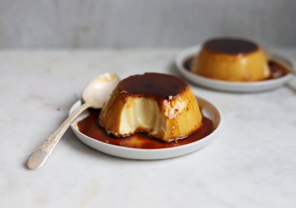

Flan

This Spanish flan is a rich and creamy set custard topped with delicious caramel sauce.
You're simply a handful of ingredients and a few easy steps away from enjoying this decadent treat!
Ingredients
- 1 cup granulated white sugar
- 3 large eggs
- 1 14oz can sweetened condensed milk
- 1 12oz can evaporated milk
- 1 tbsp vanilla extract
Instructions
- Preheat oven to 350°F (175°C).
- In a medium saucepan over medium-low heat, melt sugar until liquefied and golden in color.
Carefully pour hot syrup into a 9 inch round glass baking dish, turning the dish to evenly
coat the bottom and sides. Set aside.
- In a large bowl, beat eggs. Beat in condensed milk, evaporated milk and vanilla until smooth.
Pour egg mixture into baking dish. Cover with aluminum foil.
- Bake in preheated oven 60 minutes. Remove from oven and let cool completely.
- To serve, carefully invert on serving plate with edges when completely cool.